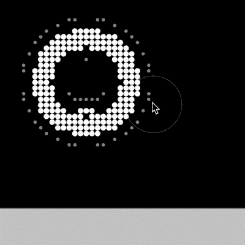
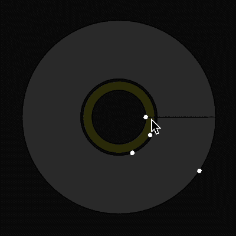

The program you are about to experience is currently in beta testing phase.
Please be aware that you may experience bugs and many experimental results.
In any case of a bug, please refresh the page.
The Fussil Program is made as an experimental program of a master thesis: “Fussil Design, Cellular automation of cohesion between nature and algorithms”, done at Academy of Fine Arts and Design in Ljubljana. The project is a two year experimental study on algorithms and nature done by Strahinja Jovanović.
The central focus of the master’s thesis is research into the elementary elements of nature, cellular automata and their influence on design processes. Through practical experiments and a theoretical research of various cellular automata, a new design tool is created that serves to create with nature and enables the implementation of newly created artifacts in various spheres of design. The new cellular automata that are created in the process are called fussils, from the Latin words fossus (excavated) and futurus (about to be, future).
The fundamental principle for creating and evaluating research is creative programming, which I also use for experiments and the realization of design tools.
The results and their design artefacts are presented in an analogue and digital environment, which also shows the large range of patterns and shapes created in the new tool.
With the cohesion of nature and algorithm, I want to contribute to the development of new visual systems and design processes. These processes are a key part of understanding nature as a key factor in shaping new practices and artefacts of the future.
Close
Tutorial
123456789101112131415
01: Let’s start!
To start exploring, click at the middle of the canvas and create a simple organism. You can also hold your mouse and while pressing to draw on the board.
Different shapes may appear, depending on how much you have pressed the mouse.
02: Be careful!

Be careful, not to touch the edge of the canvas! There are current bugs with the edge of the canvas, therefore if you suddenly press it, be sure to refresh the page!
03: Experiment with Diffusion
To start playing with the cellular automata, try changing the diffusion, reaction and expansion rates.
You will see a direct response on the canvas and how your cellular automata is reacting.
The current version support 4 different types of cellular automata, and also their different reaction-diffusion states.
04: Change color!
You can also manipulate the color of the cells for each different cellular automata you create.
This can help you distinguish them easier and create a more vivid experiment.
05: Create a reaction!
Different types of fussils can also react between themselves. Drag and drop to form a connection between them and see the reaction on canvas.
The reaction system supports more reactions with one automata. However, be aware that these procceses can take a lot of memory.
06: Remove reaction
When you are done with your reaction, you can also remove it, by drag and drop on the reaction that you firstly created.
This will remove any reaction between the different types, therefore causing one to prevail.
07: The Cell System

The Cell System is currently in the making. Here are some examinations on how you can manipulate the cell of the organism.
The inner circle is the control of its outer structure, the membrane. In case, where the inner circle is touching the outer, the membrane is strongly reacting with is surface. The outer circle represents the inner shell of the cell. By changing it, we can manipulate the reaction of membrane and inner parts of the cell
08: Outer and Inner Ring
Outer and Inner ring define the intensity of particular part of the cell. By changing the outer ring, we are manipulating the intensity of the membrane and its reaction.
By manipulating the inner ring, we are changing the intenisty of the inner structre of cell.
This can lead to very experimental results, still in the process of reaserch
09: Be careful!
The changes can lead to very interesting, tripping and psyhodelic graphics. To avoid it try not to keep the balance between outer in inner ring.
10: Play, Stop and Color
The Fussil tool allows you also to stop the animtion of the automata. This can help you observe the automata at a certain moment, or help you decide further steps.
With pressing play button again, the automata will further develop on the canvas.
Nevertheless, the tool also offers you to change the color of the background. This way you can fully customise the look of your fussils.
11: Play with other grids!
The main menu also gives you a chanche to explore different densities of cells. By clicking on the number, you can upscale or downscale your grid.
However, be aware that the densier the grid is, the more memory it consumes. This is why they can be very slow.
12: Try the Fussil Grid
The Fussil Grid lets you explore your experiments in form of a modular grid. By clicking you can add your graphics to the grid. If you click again on the cell, where the grpahic is applied, you will be able to rotate the canvas.
If you want to delete the graphic, hold "D" on the keyboard and click on the cell that you would like to remove.
13: Explore the evolution!
By clicking on slider "Frames", you can explore how your cellular automata has evolved over time. Be aware, to be able to do this, you need to stop the progres of animation. The canvas will automatically update once the button is pressed again.
You can also zoom in and out the grid, and change the number of cells, by drag and drop on buttons "+".
14: Observe them in 3D!
By each frame the cells take, a layer of points is being created in 3D system. Creating the fussils in space.
This system creates point cloud structres that you can get by clicking "Save" button.
The files that you can get are tables of points, that can be used in Rhino Grasshopper to create 3D model.
15: Make a selection
If you are not interested in the whole part of the object you are creating, you can always select the parts that you would like to work on.
The sliders provided in the main menu, provide the option to select the upper and lower limit of the structrue. By clicking "space" button, you can view only the part that you would like to have.